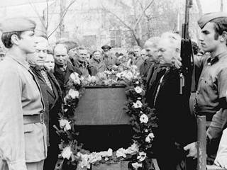

Зі спогадів колишнього комісара Першого Бородянського партизанського загону Г.С. Куцана.
«За наказом командування наш
партизанський загін теж підтягнув свої сили до передової лінії фронту і
почав громити німецькі тили, завдаючи великих втрат фашистам. 25 вересня
з’явився в Катюжанському лісі наш загін, де майже поруч, на північ від
Димера, проходила лінія фронту. По дорозі Іванків-Київ безперервним
потоком у бік Лютежа рухався німецький військовий обоз з бойовою
технікою і боєприпасами. Ішли все нові й нові колони ворожої піхоти.
Спостерігаючи за рухом ворожих рядів, мимоволі виникала думка: важко
буде нашим.
У Катюжанці цей потік розгалужувався на
два рукави. Основні підкріплення ворога йшли по большаку на Лютіж. Інші
різко повертали вліво і лісовими дорогами пробирались у район
Ясногородки через Олексіївку, Мануїльськ. У кожному з населених пунктів
стояли німецькі гарнізони, найбільші – в Димері та Мануїльську.
– Перегородити шлях німцям на всіх
дорогах в районі дій партизанського загону. Розгромити гарнізон на
хуторі Трость – таке завдання поставило командування партизанам.
Хутір Трость загубився в лісах на
півдорозі між Катюжанкою і Мануїльськом. Тут було всього 3-4 будинки, що
ховалися під кронами дерев. В одному з будинків до війни розміщувалось
лісництво, а тепер у ньому хазяїнували німці. Але скільки їх? Потрібно
було розвідати. У розвідку пішли Саша Овдієнко, який виріс у цих місцях і
знав кожну стежку, кожний кущик; командир взводу Микола Мошевський і
кулеметник Олександр Циганок. До дороги їх супроводжували бійці першої
роти на чолі з командиром Іваном Бузовецьким, перед яким ставилось
завдання зробити засідку і розгромити німецьке підкріплення, що йшло на
фронт. Партизани обійшли болото і наблизились до дороги. Почувши сирену
автомобіля, звернули в гущавину. Прислухались. Десь недалеко чувся
лемент німців і голосіння жінок.
– За мною! – наказав командир.
У вибалку, що густо заріс ліщиною,
залягли. Не встигли ще як слід замаскуватися – на дорозі з’явився перший
німець. Через п’ять кроків за ним, у колі таких же озброєних
автоматників, піднімаючи босими ногами пилюку, плелися сотні жінок і
дітей.
– Що це? Куди їх женуть? – захвилювалися партизани.
– Звісно куди. У Німеччину, – відповів хтось.
– Приготуватися! На мушку конвоїрів! Вогонь!
Зав’язався бій. Партизани вели
прицільний вогонь. Через кілька хвилин опір фашистів було подолано. Усіх
конвоїрів знищено. На волю відпущено понад 1500 мирних жителів
навколишніх сіл.
Невдача розлютувала катів. Вони
вирішили за будь-яку ціну розгромити партизанів, які створили тут
нестерпні умови для німців. На підмогу ворогові почали прибувати
есесівці. Готувалися облави. Та ми пам’ятали про головне завдання –
відтягнути якнайбільше регулярних гітлерівських військ із фронту і
вимотати їх у несподіваних боях.
Наступного дня повернулась розвідка.
У приміщенні лісництва, – почав
доповідати Овдієнко, – щонайменше сто есесівців. Зброя – автомати,
гранати і кулемети. Підхід цілком зручний. Можна непомітно з лісу
підповзти до вікон і закидати гранатами.
Командування загону уважно вивчило
матеріали розвідки, розробило конкретний план нападу на гарнізон.
Виходило наче все ясно. Розвідники знімають вартових. Саша Овдієнко,
Іван Якубчик і Григорій Скотаренко підкрадаються до вікон, кидають
гранати, після чого рота партизан раптово навалюється на казарму
гітлерівців і знищує їх. На цьому і зупинились. Уночі партизани залягли
недалеко від перехрестя доріг.
– Розвідка пішла уперед. Вдивляючись у темряву, Саша Овдієнко помітив – по дорозі щось рухається. Почувся брязкіт зброї.
– Назад! -скомандував він.
Фашистська колона наближалася.
– Приготуватися! – наказав командир.
Кілька партизанів виповзли ближче до
дороги і залягли під кущем ліщини. Усе стихло. Тільки виразніше чулись
кроки німецької розвідки. Ось вони вже поруч. Зупинились і
насторожились.
«Тільки й бити», – подумав кожний з
партизан. Але командир не давав наказу стріляти. Він чекав, коли
підтягнеться основна колона. Вона не забарилася. Близько 200 добре
озброєних гітлерівців проходили повз партизанську засідку.
– Вогонь! – пролунав голос командира.
І тут же – кулеметні та автоматні
черги. Як снопи, падали німці на землю. Ті, що вціліли, відкрили
безладний вогонь, намагаючись відійти назад до хутора Трость.
Біля лісництва, куди намагалися
пробитися німці, у небо одна за одною полетіли ракети. Тріщали кулемети,
автомати. Німці, які знаходилися у гарнізоні подумали, що на них
наступають партизани і відкрили по своїй же піхоті нищівний вогонь.
Майже до світанку точився запеклий бій між двома німецькими
підрозділами. Втрати ворога були дуже великі.. У нічній сутичці німці втратили щонайменше сто чоловік, серед них – три офіцери.
Коли розгорівся бій між німцями,
партизани тихенько вийшли з-під обстрілу і, не втративши жодного бійця,
благополучно повернулися на базу.”
Це лише один з епізодів бойової
допомоги партизан частинам Червоної Армії під час форсування Дніпра і
визволення Києва. А таких боїв було безліч. Важко оцінити той внесок
народних месників у справу визволення України у роки війни. Гірко
визнавати те, що нащадки не завжди із вдячністю це сприймають. Так
після війни на місці цього бою було встановлено пам’ятник, щоб про цей
подвиг пам’ятали всі. Але незабаром з розпорядження районного комітету
партії та сільської ради цей пам’ятник було демонтовано. З цього
починається забуття нашого героїчного минулого і тих людей, які ціною
свого життя відстояли незалежність Вітчизни.
Високо оцінив воєнні дії Першого
Бородянського партизанського загону колишній командир 240-ї стрілецької
дивізії, Герой Радянського Союзу, генерал-майор Т. Уманський, дивізія
якого приймала участь у визволенні м. Києва.
Із спогадів Т. Уманського.
«Велику допомогу партизани
Бородянського загону надали радянським військам, провівши розвідку по
виявленню вогневих точок противника на ділянці фронту
Гостомель-Мостище-Озера-Раківка-Синяк-Литвинівка-Димер.
Вогневі точки були нанесені на карту. У
ніч з 24 на 25 жовтня партизан Микола Лозинський переправив цінні
повідомлення через лінію фронту і вручив командуванню однієї з дивізій
38-ї армії. Партизанські повідомлення були настільки цінними і точними,
що 3 листопада, коли сильний артилерійський вогонь накрив позиції
противника, у перші ж хвилини були розбиті всі вогневі точки фашистів. А
6 жовтня 1943 року партизани загону підірвали міст стратегічного
значення через річку Ірпінь в районі Гостомель-Мостище, що німці
використовували для безперебійної доставки військової техніки і людських
ресурсів на передову.
Велику допомогу надали партизани
Першого Бородянського загону і бійцям 60-ї армії, яка наступала
північніше Димера. Народні месники повністю заволоділи шосейною дорогою
Іванків-Димер, підривали автомашини зі снарядами, броньовики, важкі
міномети, склади з боєприпасами, вели бої зі значними силами противника.
Активні дії партизанів у прифронтовій
смузі не могли не позначитися позитивно на бойових діях наших військ по
успішному визволенню Києва. І мені, як колишньому командирові 240-ї
стрілецької дивізії, часто згадуються ті бойові осінні дні, коли йшла
смертельна боротьба за Лютізький плацдарм, де вирішувалася доля столиці
України, де разом із доблесними радянськими воїнами мужньо билися
партизани Київщини». Перший
Бородянський загін, що налічував 158 чоловік, під час бойових операцій
пустив під укіс 4 ешелони з військовим вантажем, знищив 13 гармат
різного калібру, 5 бронемашин, 2 бронетранспортери, 10 вантажних
автомобілів з боєприпасами, 74 підводи з військовим вантажем, 5200м
телефонних дротів, підірвав 2 мости, врятував від німецької каторги
багатьох людей.
Володимир БУБИР,
с. Катюжанка
с. Катюжанка